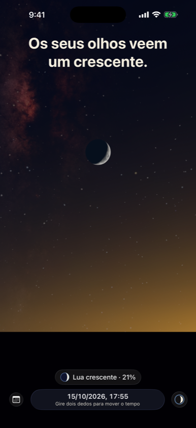
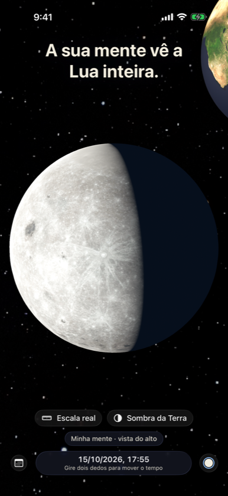
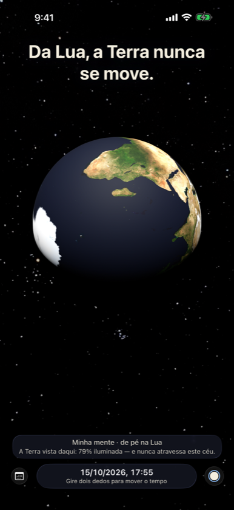

Os seus olhos veem um crescente. A sua mente sabe que a Lua nunca é um crescente. Two Egoes é um céu contínuo onde pode ficar em qualquer lugar — o seu horizonte, a Lua, o Sol ou muito acima de tudo.



De pé na Lua
A Terra fica parada no céu lunar, com fases opostas às da Lua.
Porque não todos os meses?
A sombra da Terra à distância da Lua, em proporções reais, e a inclinação de 5° que decide cada eclipse.
Nada está parado
Sentado na cadeira, percorre cerca de 30 km à volta do Sol em cada segundo.